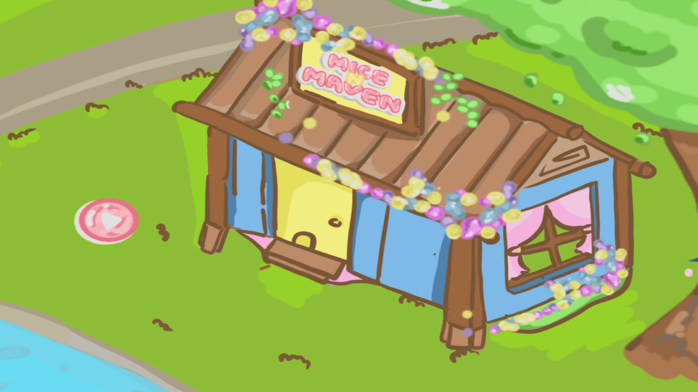
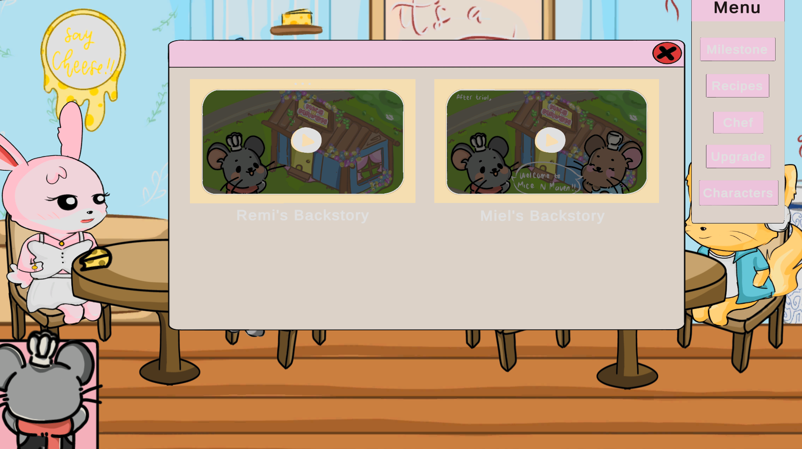
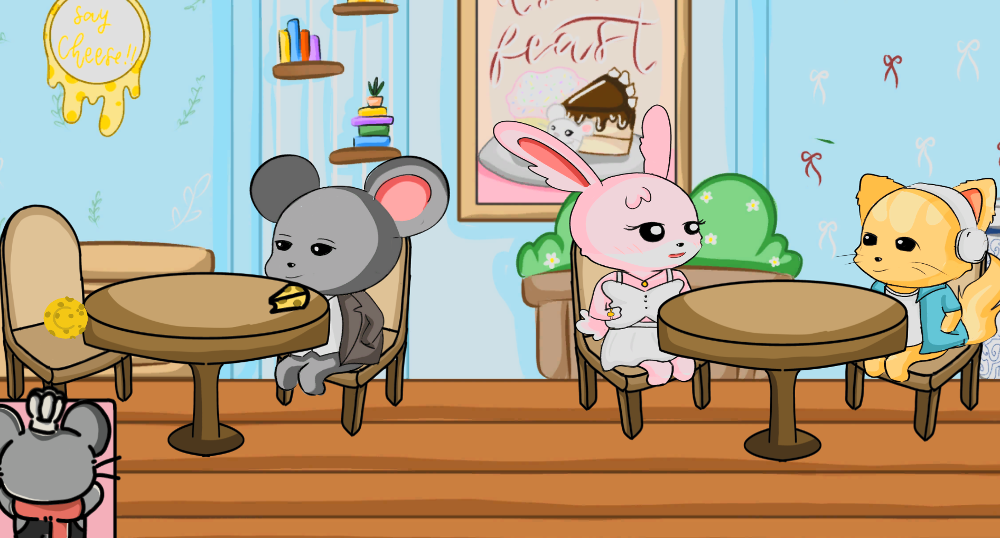
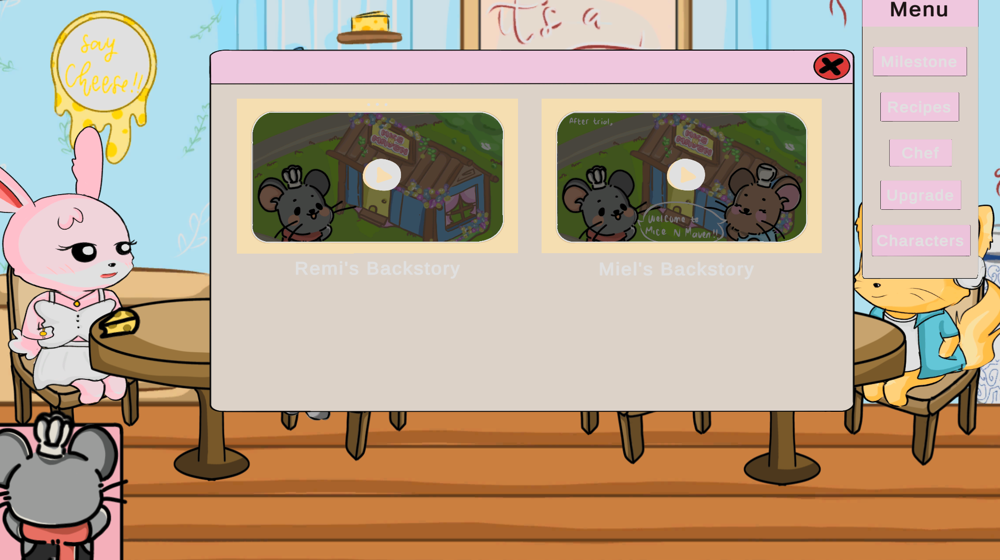
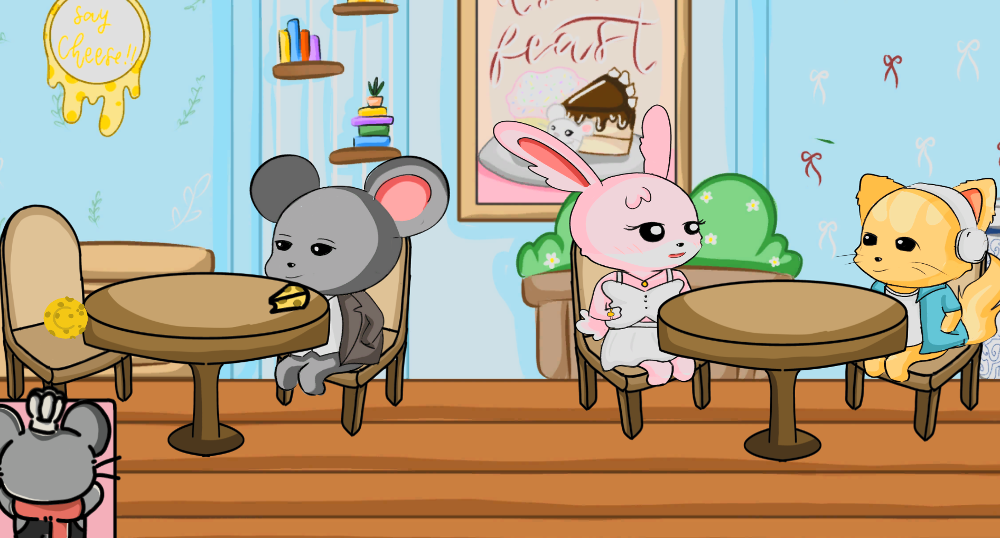
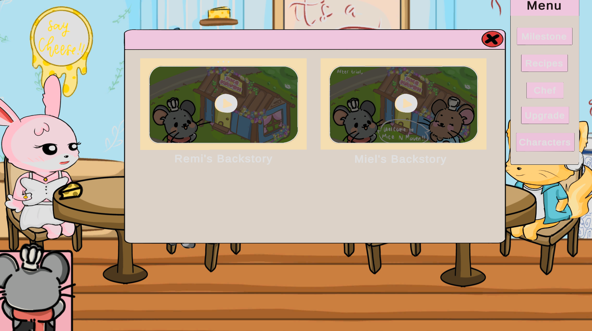
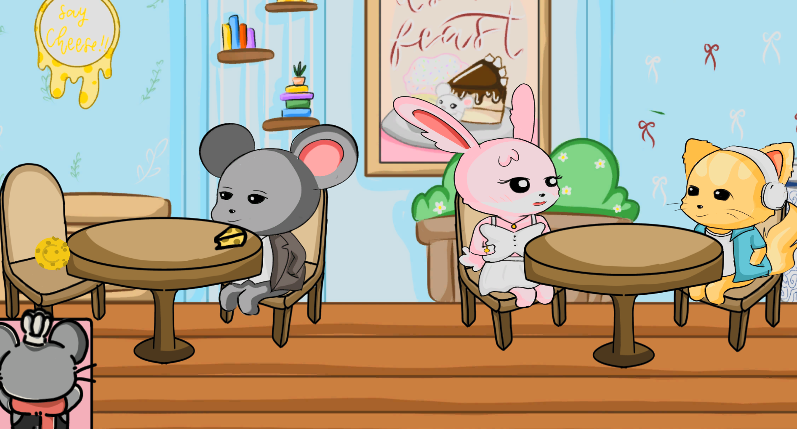

 





Mice N Maven
Lead Developer
Description
Led and Developed a 2D tap-based café idle simulation game combining automated gameplay systems, upgrades, and interactive UI. Took charge of coding, UI design, and system testing to ensure smooth and engaging player experience.
Project Details
Highlights / Features
- Implemented core gameplay systems including dish mechanics, chef and ingredient upgrades, and limited recipe slots.
- Developed automated economy and progression loops, offline coin generation, and bonus rewards for rare customers.
- Designed in-game UI/UX elements such as menus and interactive feedback to enhance player experience.
- Conducted user and system testing to ensure all game mechanics and interactions functioned seamlessly together.
- Led overall project workflow, coordinating team efforts and making key design decisions.
- Managed version control and collaboration using Git/GitHub to maintain a clean codebase.
Unity
C#
Git/GitHub
User Experience (UX)